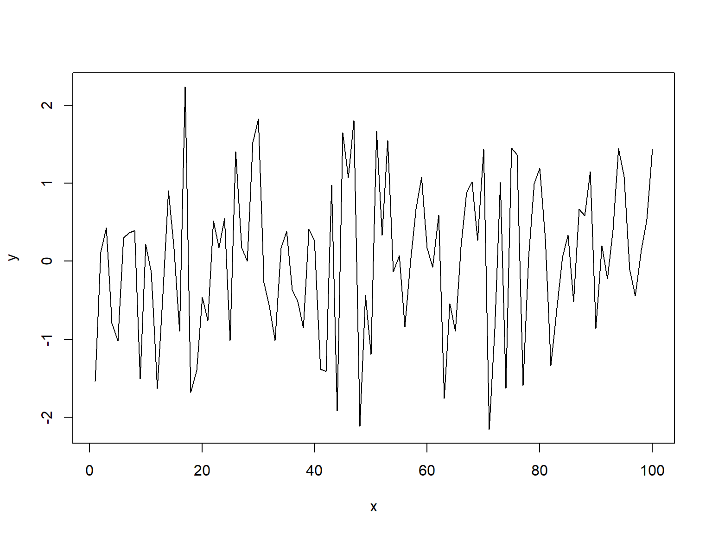
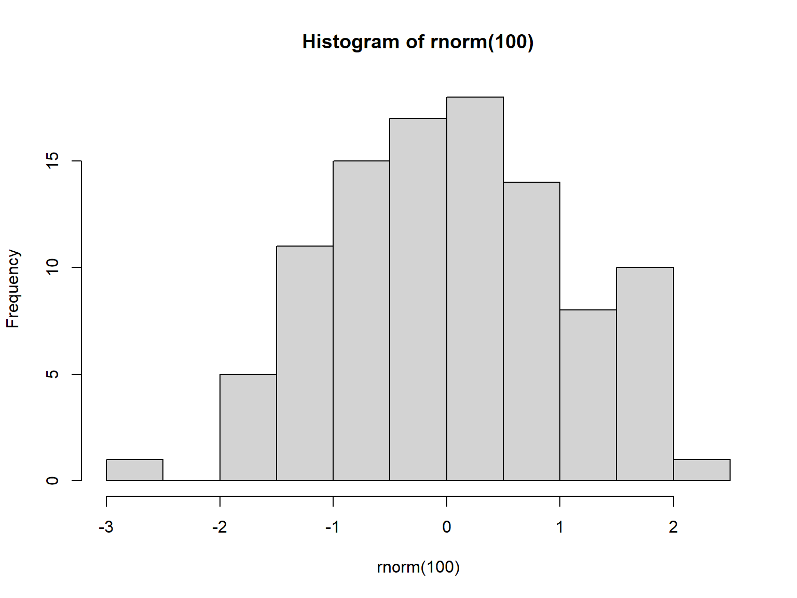
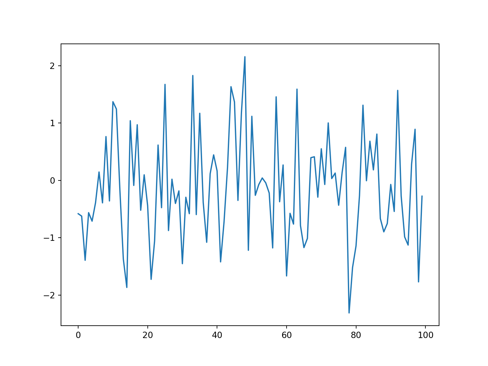
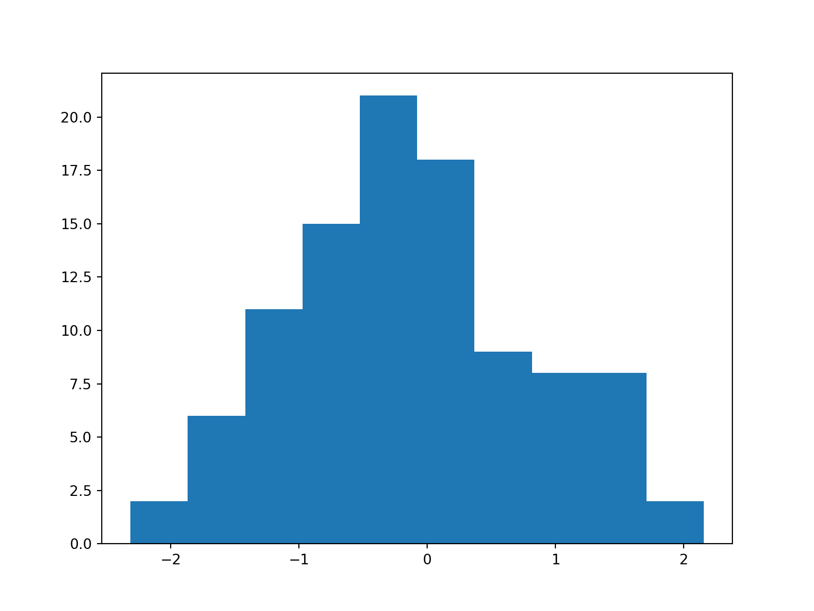
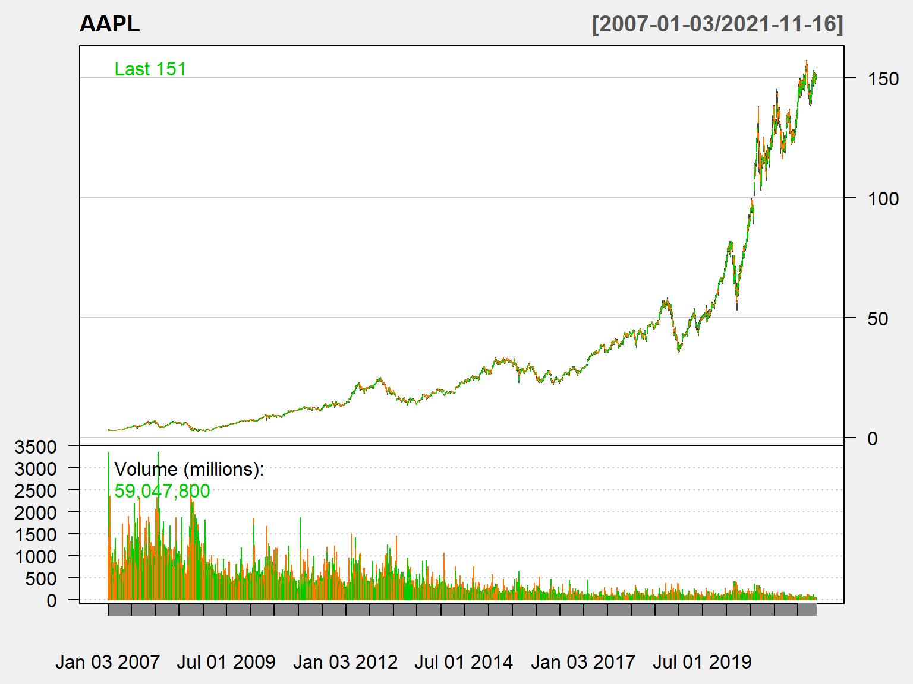
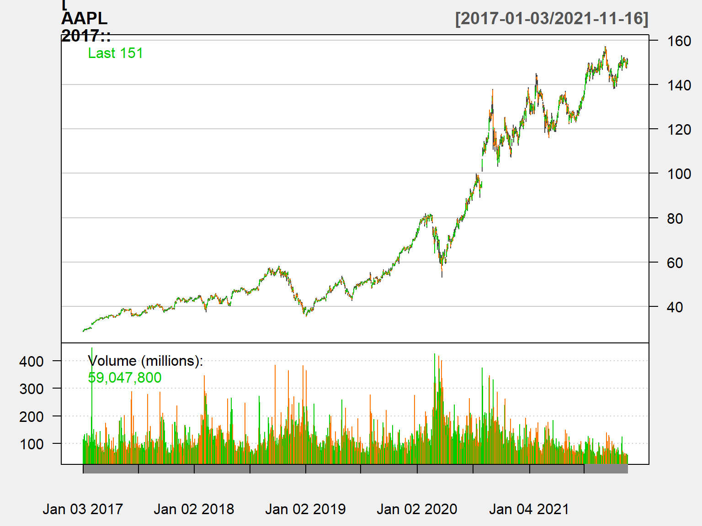
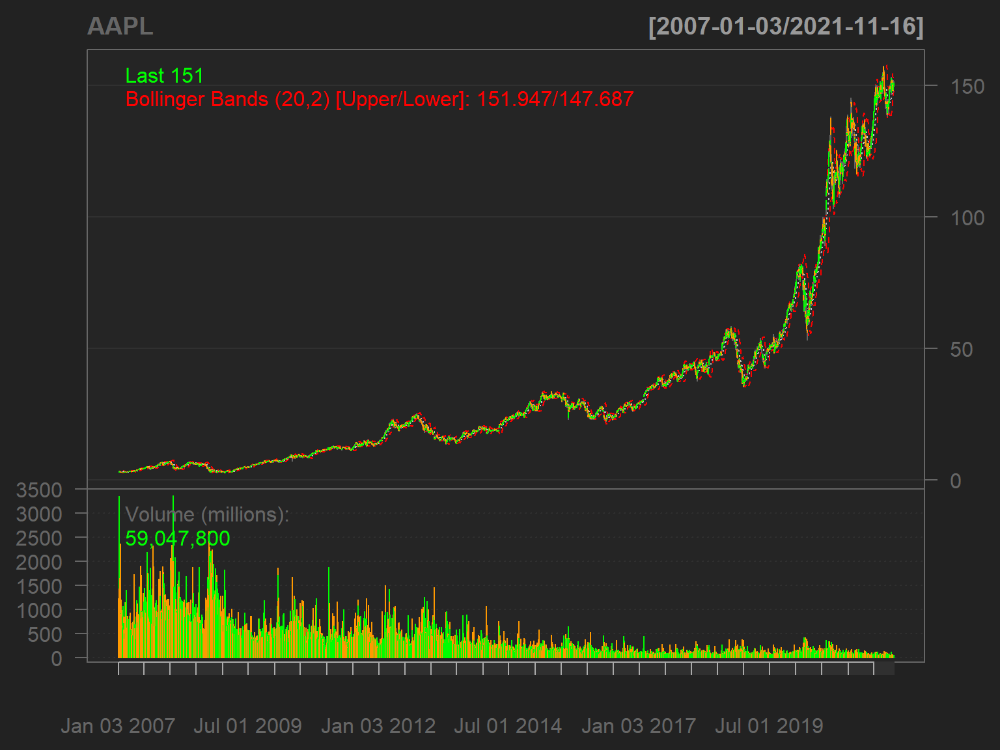
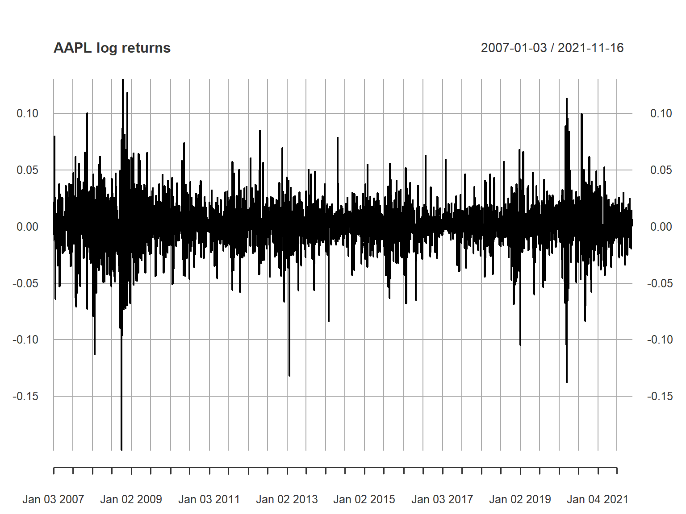
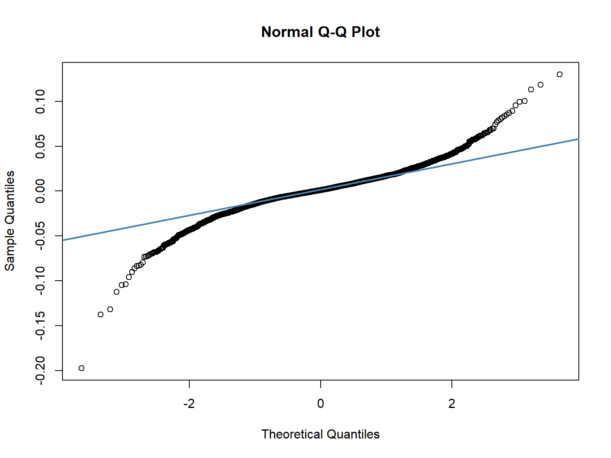

R:
Python:
Этот график построен в R:
## Warning: пакет 'reticulate' был собран под R версии 4.1.1НО:
НО: + Цена. Стандартная коммерческая лицензия составляет около $800/год на пользователя, и это без дополнительных пакетов, которые могут понадобиться. + Нишевость. Другие известные статистические пакеты (Statа, SPSS, EViews) сейчас относительно редко используются в анализе данных. Маловероятно, что вы столкнетесь с ними вне академической работы. + “Цель оправдывает средства”. Необходимо выбирать средства под решаемую задачу, сам по себе выбор конкретного инструментария не так важен.
1.1. Зайти на сайт CRAN и установить R.
1.2. Зайти на сайт RStudio и обязательно установить R Studio – это более удобный и совершенный редактор (IDE) для R.
C:\Users\Вася). Лучше изменить предлагаемую папку “по умолчанию” на что-то другое (к примеру, D:\R).Альтернатива – использование RStudio Cloud – облачного версия компании RStudio.
Бесплатный план RStudio Cloud включает:
Этого вполне достаточно для нашей работы.
Существуют много различных вариантов установки Python:
conda install ipython jupyter в командной строкеваша модель значима или нет? как ее можно модифицировать? что показывают статистические тесты?
?type)название_функции() + скобки + TabRStudio представляет собой очень удобную среду (IDE) для работы в R, которая сильно облегчается жизнь.
Environment). Вкладка History показывает все команды, которые вы вводили с начала сеанса работы.packages будет отображаться серия пакетов или надстроек, необходимых для запуска определенных процессов. Дополнительную информацию см. на вкладке helpИзучите cheat sheet по работе в Rstudio
cell (Ячейка) — это контейнер для текста, который будет отображаться в записной книжке, или код, который будет выполняться ядром записной книжки.Markdown содержит текст, отформатированный с использованием Markdown, и отображает его вывод на месте при запуске. Если вы не знаете формат markdown - имеет смысл сделать это.Начнем с основ:
## [1] "Hello world!"или на Python
## Hello, world!Сообщения, начинающиеся со знака ##, – показывают результат вывода в консоли R.
R/Python работают и как калькулятор. Можно складывать переменные:
## [1] 4умножать:
## [1] 6делить:
## [1] 3извлекать квадратный корень:
## [1] 2.236068## 2.23606797749979брать логарифм
## [1] 1.609438## 1.6094379124341003возводить в степень
## [1] 1024## 1024логические операторы в R и Python имеют одинаковый синтаксис
## [1] TRUE## [1] TRUE## [1] TRUE## [1] TRUE## True## True## True## TrueОператор присваивания присваивает знание различным типам переменным.
R В R Можно использовать = или <- – они идентичны. Обычно используется <-. В Rstudio есть удобное сочетание клавиш Alt - для того, чтобы написать эту команду.
x = 10 # присвоить переменной x значение 10
y <- x # присвоить переменной y значение переменной x
print(y)## [1] 10Python
#Python
x = 10 # присвоить переменной x значение 10
y = x # присвоить переменной y значение переменной x
print(y)## 10## [1] 1024Ими могут быть, десятичные числа. Они называются numeric.
## [1] 10## [1] "numeric"## [1] "double"## [1] TRUEв Python
## 10.0## <class 'float'>## <class 'int'>## [1] 10## 10Тип integer.
## [1] 3## [1] "integer"## [1] TRUE## [1] TRUE## <class 'int'>## <class 'float'>## True## False## [1] FALSE## [1] "logical"Логические операции
## False## True## Falsecharacter в R, ‘string’ в Python – строковая переменная.#R
x <- 1 # присвоить x численное значение 1
y <- '1' # присвоить y текстовое значение равное 1
as.numeric(y) # преобразовать y в тип numeric ## [1] 1в Python
#Python
x = 1 # присвоить x численное значение 1
y = '1' # присвоить y текстовое значение равное 1
int(y) # преобразовать y в тип integer ## 1## 1.0## 2Обращайте внимание на такой, какой тип имеет переменная с которой вы работаете.
В R есть специальный тип для обозначения пропущенных данных (missing value).
## [1] TRUE## [1] FALSE TRUE## [1] FALSEВ Python есть отдельный тип NaN – not a number. Это специальный численный тип для значений, которые не определены или которые не могут быть представлены.
## <class 'float'>## nan## True## FalseВектор – тип данных, который состоит из упорядоченного набора объектов одного типа. В R вектор можно создать с помощью команды c.
## [1] TRUE## [1] "2" "3" "5" "aa" "bb" "cc" "dd" "ee"## [1 2 3]## <class 'numpy.ndarray'>Есть и другие варианты для создания векторов:
## [1] 1 2 3 4 5 6 7 8 9 10## [1] 2 4 6 8 10## [1] 1 3 5 7 9## [1] 1 2 3 4 1 2 3 4## [1] 1 1 2 2 3 3 4 4## array([0, 1, 2, 3, 4, 5, 6, 7, 8, 9])## array([2, 4, 6, 8])## array([1. , 1.25, 1.5 , 1.75, 2. ])## array([1, 1, 2, 2, 3, 3, 4, 4])Для векторов одинаковой длины операции совершают поэлементно.
У каждого вектора есть свой индекс (порядковый номер), к которому можно обратиться с помощью имени объекта (вектора) и квадратных скобок. Индекс начинается с ‘1’ (а не с 0 как в Python!). Знак минус (-) исключает данный индекс из вектора.
## [1] "c"## [1] NA## [1] "a" "b" "c"## [1] "a" "c" "e"## [1] "a" "b" "d" "e"## [1] "c" "d" "e"## ['a' 'b' 'c' 'd' 'e']## 'd'## array(['b', 'c'], dtype='<U1')## array(['a', 'c', 'e'], dtype='<U1')## array(['d', 'e'], dtype='<U1')## array(['c', 'd', 'e'], dtype='<U1')for.## [1] 1 2 3## [1] 4 5 6## [1] 5 7 9## [1] 4 10 18## [1] 0.0000000 0.6931472 1.0986123Операции могут выполняться и с векторами разной длины. В этом случае используется “выравнивание векторов”” (recycling rule).
## [1] 11 22 33 14 25 36 17 28 39В чем оно заключается?
с помощью функции ‘length’ можно узнать длину вектора
## [1] 3## array([11, 21, 31])## array([20, 40, 60])## array([2.30258509, 2.99573227, 3.40119738])## array([11, 22, 33])## 3data frame – это набор (коллекция) векторов, объединенных в один объект. Каждый столбец data frame – вектор. Каждая строка – наблюдение. Большинство структурированных данных хранится в качестве data frame.
## 'data.frame': 32 obs. of 11 variables:
## $ mpg : num 21 21 22.8 21.4 18.7 18.1 14.3 24.4 22.8 19.2 ...
## $ cyl : num 6 6 4 6 8 6 8 4 4 6 ...
## $ disp: num 160 160 108 258 360 ...
## $ hp : num 110 110 93 110 175 105 245 62 95 123 ...
## $ drat: num 3.9 3.9 3.85 3.08 3.15 2.76 3.21 3.69 3.92 3.92 ...
## $ wt : num 2.62 2.88 2.32 3.21 3.44 ...
## $ qsec: num 16.5 17 18.6 19.4 17 ...
## $ vs : num 0 0 1 1 0 1 0 1 1 1 ...
## $ am : num 1 1 1 0 0 0 0 0 0 0 ...
## $ gear: num 4 4 4 3 3 3 3 4 4 4 ...
## $ carb: num 4 4 1 1 2 1 4 2 2 4 ...## [1] 32 11## [1] 11## mpg cyl disp hp drat wt qsec vs am gear carb
## Mazda RX4 21.0 6 160 110 3.90 2.620 16.46 0 1 4 4
## Mazda RX4 Wag 21.0 6 160 110 3.90 2.875 17.02 0 1 4 4
## Datsun 710 22.8 4 108 93 3.85 2.320 18.61 1 1 4 1
## Hornet 4 Drive 21.4 6 258 110 3.08 3.215 19.44 1 0 3 1
## Hornet Sportabout 18.7 8 360 175 3.15 3.440 17.02 0 0 3 2
## Valiant 18.1 6 225 105 2.76 3.460 20.22 1 0 3 1## mpg cyl disp hp drat wt qsec vs am gear carb
## Mazda RX4 21 6 160 110 3.9 2.620 16.46 0 1 4 4
## Mazda RX4 Wag 21 6 160 110 3.9 2.875 17.02 0 1 4 4## mpg cyl disp hp drat wt qsec vs am gear carb
## Porsche 914-2 26.0 4 120.3 91 4.43 2.140 16.7 0 1 5 2
## Lotus Europa 30.4 4 95.1 113 3.77 1.513 16.9 1 1 5 2
## Ford Pantera L 15.8 8 351.0 264 4.22 3.170 14.5 0 1 5 4
## Ferrari Dino 19.7 6 145.0 175 3.62 2.770 15.5 0 1 5 6
## Maserati Bora 15.0 8 301.0 335 3.54 3.570 14.6 0 1 5 8
## Volvo 142E 21.4 4 121.0 109 4.11 2.780 18.6 1 1 4 2## mpg cyl disp hp drat wt qsec vs am gear carb
## Ferrari Dino 19.7 6 145 175 3.62 2.77 15.5 0 1 5 6
## Maserati Bora 15.0 8 301 335 3.54 3.57 14.6 0 1 5 8
## Volvo 142E 21.4 4 121 109 4.11 2.78 18.6 1 1 4 2Существуют разные способы обратиться к элементам data frame.
К примеру, к отдельной колонке (переменной) можно обратиться следующими способами:
## am
## Mazda RX4 1
## Mazda RX4 Wag 1
## Datsun 710 1
## Hornet 4 Drive 0
## Hornet Sportabout 0
## Valiant 0
## Duster 360 0
## Merc 240D 0
## Merc 230 0
## Merc 280 0
## Merc 280C 0
## Merc 450SE 0
## Merc 450SL 0
## Merc 450SLC 0
## Cadillac Fleetwood 0
## Lincoln Continental 0
## Chrysler Imperial 0
## Fiat 128 1
## Honda Civic 1
## Toyota Corolla 1
## Toyota Corona 0
## Dodge Challenger 0
## AMC Javelin 0
## Camaro Z28 0
## Pontiac Firebird 0
## Fiat X1-9 1
## Porsche 914-2 1
## Lotus Europa 1
## Ford Pantera L 1
## Ferrari Dino 1
## Maserati Bora 1
## Volvo 142E 1## [1] "data.frame"## [1] 1 1 1 0 0 0 0 0 0 0 0 0 0 0 0 0 0 1 1 1 0 0 0 0 0 1 1 1 1 1 1 1## [1] "numeric"## [1] 1 1 1 0 0 0 0 0 0 0 0 0 0 0 0 0 0 1 1 1 0 0 0 0 0 1 1 1 1 1 1 1## [1] 1 1 1 0 0 0 0 0 0 0 0 0 0 0 0 0 0 1 1 1 0 0 0 0 0 1 1 1 1 1 1 1К строкам можно обратиться следующими способами:
## mpg cyl disp hp drat wt qsec vs am gear carb
## Camaro Z28 13.3 8 350 245 3.73 3.84 15.41 0 0 3 4## mpg cyl disp hp drat wt qsec vs am gear carb
## Datsun 710 22.8 4 108 93 3.85 2.32 18.61 1 1 4 1
## Camaro Z28 13.3 8 350 245 3.73 3.84 15.41 0 0 3 4## [1] FALSE FALSE FALSE TRUE TRUE TRUE TRUE TRUE TRUE TRUE TRUE TRUE
## [13] TRUE TRUE TRUE TRUE TRUE FALSE FALSE FALSE TRUE TRUE TRUE TRUE
## [25] TRUE FALSE FALSE FALSE FALSE FALSE FALSE FALSE## mpg cyl disp hp drat wt qsec vs am gear carb
## Hornet 4 Drive 21.4 6 258.0 110 3.08 3.215 19.44 1 0 3 1
## Hornet Sportabout 18.7 8 360.0 175 3.15 3.440 17.02 0 0 3 2
## Valiant 18.1 6 225.0 105 2.76 3.460 20.22 1 0 3 1
## Duster 360 14.3 8 360.0 245 3.21 3.570 15.84 0 0 3 4
## Merc 240D 24.4 4 146.7 62 3.69 3.190 20.00 1 0 4 2
## Merc 230 22.8 4 140.8 95 3.92 3.150 22.90 1 0 4 2
## Merc 280 19.2 6 167.6 123 3.92 3.440 18.30 1 0 4 4
## Merc 280C 17.8 6 167.6 123 3.92 3.440 18.90 1 0 4 4
## Merc 450SE 16.4 8 275.8 180 3.07 4.070 17.40 0 0 3 3
## Merc 450SL 17.3 8 275.8 180 3.07 3.730 17.60 0 0 3 3
## Merc 450SLC 15.2 8 275.8 180 3.07 3.780 18.00 0 0 3 3
## Cadillac Fleetwood 10.4 8 472.0 205 2.93 5.250 17.98 0 0 3 4
## Lincoln Continental 10.4 8 460.0 215 3.00 5.424 17.82 0 0 3 4
## Chrysler Imperial 14.7 8 440.0 230 3.23 5.345 17.42 0 0 3 4
## Toyota Corona 21.5 4 120.1 97 3.70 2.465 20.01 1 0 3 1
## Dodge Challenger 15.5 8 318.0 150 2.76 3.520 16.87 0 0 3 2
## AMC Javelin 15.2 8 304.0 150 3.15 3.435 17.30 0 0 3 2
## Camaro Z28 13.3 8 350.0 245 3.73 3.840 15.41 0 0 3 4
## Pontiac Firebird 19.2 8 400.0 175 3.08 3.845 17.05 0 0 3 2Изучите cheet sheet по базовым функциям R.
pandas – основной пакет для работы и обработки данных.
Series - это одномерный массив индексированных данных. Его можно создать из списка или массива следующим образом:
## 0 0.25
## 1 0.50
## 2 0.75
## 3 1.00
## dtype: float64## array([0.25, 0.5 , 0.75, 1. ])## RangeIndex(start=0, stop=4, step=1)DataFrame
company = ["MSFT", "AAPL", "XOM"]
sales = [100,200,150]
profit = [20,-10,30
]
a = pd.DataFrame({'company': company,
'sales': sales})
a ## company sales
## 0 MSFT 100
## 1 AAPL 200
## 2 XOM 150## sales profit
## MSFT 100 20
## AAPL 200 -10
## XOM 150 30## Index(['MSFT', 'AAPL', 'XOM'], dtype='object')ссылки и срезы
## MSFT 20
## AAPL -10
## XOM 30
## Name: profit, dtype: int64## sales profit margin
## MSFT 100 20 0.20
## AAPL 200 -10 -0.05
## XOM 150 30 0.20## sales profit margin
## MSFT 100 20 0.2
## XOM 150 30 0.2## MSFT 100
## AAPL 200
## XOM 150
## Name: sales, dtype: int64## sales
## MSFT 100
## AAPL 200
## XOM 150## sales
## MSFT 100
## XOM 150DataFrame: содержит данные в виде таблиц для упрощения манипуляций и построния отдельных срезов.
Создание: + можно построить по строке или по столбцу + можно прочитать из файла или из Интернета
Основные части: + данные + индекс (id) + столбцы Выбор деталей:
Пока мы работали только над одним датафреймом , также можно объеединять/комбинировать датафреймы.
Тип Date представляет календарные даты. Финансовые серии как правило представляют собой временный ряд, упорядоченный во времени. Поэтому эффективная работа с данными важна для финансового анализа
## [1] "Wed Nov 17 14:15:11 2021"## [1] "2021-11-17"## [1] "Date"## [1] 18948Даты можно представлять различным образом с помощью функции format
## [1] "17 ноя 2021"| Символ | Значение | Пример |
|---|---|---|
| %d | день как число (0-31) | 31 |
| %a | сокращенный день недели | вт |
| %A | день недели | Вторник |
| %m | месяц (00-12) | 00-12 |
| %b | сокращенный месяц | ноя |
| %B | полный месяц | ноября |
| %y | 2-значный год | 18 |
| %Y | 4-значный год | 2018 |
Что делать, если мы хотим даты на английском языке?
Нужно поменять параметры языка для вашей системы и потом вернуть их обратно:
Sys.getlocale() #"ru_RU.UTF-8/ru_RU.UTF-8/ru_RU.UTF-8/C/ru_RU.UTF-8/ru_RU.UTF-8" или "=Russian_Russia.1251" (в Windows)## [1] "LC_COLLATE=Russian_Russia.1251;LC_CTYPE=Russian_Russia.1251;LC_MONETARY=Russian_Russia.1251;LC_NUMERIC=C;LC_TIME=Russian_Russia.1251"## [1] "C"## [1] "17 Nov 2021"## Warning in Sys.setlocale(locale = "ru_RU.UTF-8"): ОС сообщает, что запрос
## установки локали в "ru_RU.UTF-8" не может быть выполнен## [1] ""можно создавать вектора дат
## [1] "2021-11-17" "2021-11-24" "2021-12-01" "2021-12-08" "2021-12-15"
## [6] "2021-12-22" "2021-12-29" "2022-01-05" "2022-01-12" "2022-01-19"## [1] "Wednesday"## [1] "November"## [1] "2021-11-16" "2021-11-23" "2021-11-30" "2021-12-07" "2021-12-14"
## [6] "2021-12-21" "2021-12-28" "2022-01-04" "2022-01-11" "2022-01-18"Можно делать конвертацию между типами character и Date c помощью функций as.Date и as.character.
## [1] "2021-11-17"## [1] "2018-11-06"## [1] NAпреобразуйте в тип Date следующую строку: 16 ноя, 2018.
## (Timestamp('2021-11-15 00:00:00'), Timestamp('2021-11-19 00:00:00'))## 4## TrueВы, наверняка, сталкивалась с тем, что Excel воспринимает даты как целые числа – что-то вроде 43831. Это связано с тем, что дата в Excel – это число дней с 30 декабря 1899 года. 43831 – это 1 января 2020 года.
Вы можете преобразовать прочитанные в Excel даты в тип даты R
## [1] "2020-01-01"R
Стандартная версия R включает несколько базовых пакетов, которые включают в себя встроенные функции и операции. Однако сила R основана на использовании дополнительных пакетов, которые расширяют базовый функционал. Мы будем использовать несколько разных дополнительных пакетов.
Для использования пакета его сначала надо установить с помощью команды install.packages – это приводит к тому, что пакет скачивается из Интернета и устанавливается на ваш компьютер. Затем надо загрузить пакет для использования в работе с помощью команды ‘library’.
## Загрузка требуемого пакета: zoo##
## Присоединяю пакет: 'zoo'## Следующие объекты скрыты от 'package:base':
##
## as.Date, as.Date.numericданная команда установит пакет, если он ранее не был установлен:
## Загрузка требуемого пакета: lubridate## Warning: пакет 'lubridate' был собран под R версии 4.1.1##
## Присоединяю пакет: 'lubridate'## Следующие объекты скрыты от 'package:base':
##
## date, intersect, setdiff, unionPython
Python использует аналогичную логику установки пакектов
pip install numpy – установка пакета numpy с помощью менеджера пакетов pip conda install numpy – установка пакета с использованием conda
## [1] "2021-11-17"## [1] 11## [1] 4## [1] FALSEПосмотрите cheat sheet по работе с данными в R
Существует несколько возможных загрузить данные в R/Python:
В рамках наших лабораторных работ мы будем использовать преимущественно загрузку напрямую через Интернет.
В R есть несколько специальных типов данных для работы с временными рядами. Один из них – xts (extendible time series).
data(sample_matrix)
df_xts <- as.xts(as.data.frame(sample_matrix),
important = 'very important info!')
str(df_xts)## An 'xts' object on 2007-01-02/2007-06-30 containing:
## Data: num [1:180, 1:4] 50 50.2 50.4 50.4 50.2 ...
## - attr(*, "dimnames")=List of 2
## ..$ : NULL
## ..$ : chr [1:4] "Open" "High" "Low" "Close"
## Indexed by objects of class: [POSIXct,POSIXt] TZ:
## xts Attributes:
## List of 1
## $ important: chr "very important info!"## [,1]
## 2021-11-18 1
## 2021-11-19 2
## 2021-11-20 3
## 2021-11-21 4
## 2021-11-22 5
## 2021-11-23 6
## 2021-11-24 7
## 2021-11-25 8
## 2021-11-26 9
## 2021-11-27 10## [1] "2007-01-02 MSK" "2007-01-03 MSK" "2007-01-04 MSK" "2007-01-05 MSK"
## [5] "2007-01-06 MSK" "2007-01-07 MSK"## Open High Low Close
## [1,] 50.03978 50.11778 49.95041 50.11778
## [2,] 50.23050 50.42188 50.23050 50.39767
## [3,] 50.42096 50.42096 50.26414 50.33236
## [4,] 50.37347 50.37347 50.22103 50.33459
## [5,] 50.24433 50.24433 50.11121 50.18112
## [6,] 50.13211 50.21561 49.99185 49.99185Основное удобство работы с объектами типа xts – удобные способы получать срезы исходных данных и возможность работать с датами:
## Open High Low Close
## 2007-01-06 50.24433 50.24433 50.11121 50.18112## Open High Low Close
## 2007-03-01 50.81620 50.81620 50.56451 50.57075
## 2007-03-02 50.60980 50.72061 50.50808 50.61559
## 2007-03-03 50.73241 50.73241 50.40929 50.41033
## 2007-03-04 50.39273 50.40881 50.24922 50.32636
## 2007-03-05 50.26501 50.34050 50.26501 50.29567
## 2007-03-06 50.27464 50.32019 50.16380 50.16380
## 2007-03-07 50.14458 50.20278 49.91381 49.91381
## 2007-03-08 49.93149 50.00364 49.84893 49.91839
## 2007-03-09 49.92377 49.92377 49.74242 49.80712
## 2007-03-10 49.79370 49.88984 49.70385 49.88698
## 2007-03-11 49.83062 49.88295 49.76031 49.78806
## 2007-03-12 49.82763 49.90311 49.67049 49.74033
## 2007-03-13 49.69628 49.70863 49.37924 49.37924
## 2007-03-14 49.36270 49.53735 49.30746 49.53735
## 2007-03-15 49.57374 49.62310 49.39876 49.49600
## 2007-03-16 49.44900 49.65285 49.42416 49.59500
## 2007-03-17 49.55666 49.55666 49.33564 49.34714
## 2007-03-18 49.29778 49.67857 49.29778 49.65463
## 2007-03-19 49.62747 49.65407 49.51604 49.54590
## 2007-03-20 49.59529 49.62003 49.42321 49.50690
## 2007-03-21 49.49765 49.53961 49.41610 49.51807
## 2007-03-22 49.42306 49.42306 49.31184 49.39687
## 2007-03-23 49.27281 49.27281 48.93095 48.93095
## 2007-03-24 48.86635 48.86635 48.52684 48.52684
## 2007-03-25 48.50649 48.50649 48.33409 48.33973
## 2007-03-26 48.34210 48.44637 48.28969 48.28969
## 2007-03-27 48.25248 48.41572 48.23648 48.30851
## 2007-03-28 48.33090 48.53595 48.33090 48.53595
## 2007-03-29 48.59236 48.69988 48.57432 48.69988
## 2007-03-30 48.74562 49.00218 48.74562 48.93546
## 2007-03-31 48.95616 49.09728 48.95616 48.97490## Open High Low Close
## 2007-01-02 50.03978 50.11778 49.95041 50.11778
## 2007-01-03 50.23050 50.42188 50.23050 50.39767
## 2007-01-04 50.42096 50.42096 50.26414 50.33236
## 2007-01-05 50.37347 50.37347 50.22103 50.33459
## 2007-01-06 50.24433 50.24433 50.11121 50.18112
## 2007-01-07 50.13211 50.21561 49.99185 49.99185## Open High Low Close
## 2007-06-25 47.20471 47.42772 47.13405 47.42772
## 2007-06-26 47.44300 47.61611 47.44300 47.61611
## 2007-06-27 47.62323 47.71673 47.60015 47.62769
## 2007-06-28 47.67604 47.70460 47.57241 47.60716
## 2007-06-29 47.63629 47.77563 47.61733 47.66471
## 2007-06-30 47.67468 47.94127 47.67468 47.76719## Open High Low Close
## 2007-01-02 50.03978 50.11778 49.95041 50.11778
## 2007-01-03 50.23050 50.42188 50.23050 50.39767
## 2007-01-04 50.42096 50.42096 50.26414 50.33236
## 2007-01-05 50.37347 50.37347 50.22103 50.33459
## 2007-01-06 50.24433 50.24433 50.11121 50.18112
## 2007-01-07 50.13211 50.21561 49.99185 49.99185## Open High Low Close
## 2007-03-01 50.81620 50.81620 50.56451 50.57075
## 2007-03-02 50.60980 50.72061 50.50808 50.61559
## 2007-03-03 50.73241 50.73241 50.40929 50.41033
## 2007-03-04 50.39273 50.40881 50.24922 50.32636
## 2007-03-05 50.26501 50.34050 50.26501 50.29567
## 2007-03-06 50.27464 50.32019 50.16380 50.16380
## 2007-03-07 50.14458 50.20278 49.91381 49.91381
## 2007-03-08 49.93149 50.00364 49.84893 49.91839
## 2007-03-09 49.92377 49.92377 49.74242 49.80712
## 2007-03-10 49.79370 49.88984 49.70385 49.88698
## 2007-03-11 49.83062 49.88295 49.76031 49.78806
## 2007-03-12 49.82763 49.90311 49.67049 49.74033
## 2007-03-13 49.69628 49.70863 49.37924 49.37924
## 2007-03-14 49.36270 49.53735 49.30746 49.53735
## 2007-03-15 49.57374 49.62310 49.39876 49.49600
## 2007-03-16 49.44900 49.65285 49.42416 49.59500
## 2007-03-17 49.55666 49.55666 49.33564 49.34714
## 2007-03-18 49.29778 49.67857 49.29778 49.65463
## 2007-03-19 49.62747 49.65407 49.51604 49.54590
## 2007-03-20 49.59529 49.62003 49.42321 49.50690
## 2007-03-21 49.49765 49.53961 49.41610 49.51807
## 2007-03-22 49.42306 49.42306 49.31184 49.39687
## 2007-03-23 49.27281 49.27281 48.93095 48.93095
## 2007-03-24 48.86635 48.86635 48.52684 48.52684
## 2007-03-25 48.50649 48.50649 48.33409 48.33973
## 2007-03-26 48.34210 48.44637 48.28969 48.28969
## 2007-03-27 48.25248 48.41572 48.23648 48.30851
## 2007-03-28 48.33090 48.53595 48.33090 48.53595
## 2007-03-29 48.59236 48.69988 48.57432 48.69988
## 2007-03-30 48.74562 49.00218 48.74562 48.93546
## 2007-03-31 48.95616 49.09728 48.95616 48.97490## Open High Low Close
## 2007-01-02 50.03978 50.11778 49.95041 50.11778
## 2007-01-03 50.23050 50.42188 50.23050 50.39767
## 2007-01-04 50.42096 50.42096 50.26414 50.33236
## 2007-01-05 50.37347 50.37347 50.22103 50.33459
## 2007-01-06 50.24433 50.24433 50.11121 50.18112
## 2007-01-07 50.13211 50.21561 49.99185 49.99185
## 2007-01-08 50.03555 50.10363 49.96971 49.98806## Open High Low Close
## 2007-06-26 47.44300 47.61611 47.44300 47.61611
## 2007-06-27 47.62323 47.71673 47.60015 47.62769
## 2007-06-28 47.67604 47.70460 47.57241 47.60716## Open High Low Close
## [1,] 50.03978 50.11778 49.95041 50.11778
## [2,] 50.23050 50.42188 50.23050 50.39767
## [3,] 50.42096 50.42096 50.26414 50.33236
## [4,] 50.37347 50.37347 50.22103 50.33459
## [5,] 50.24433 50.24433 50.11121 50.18112
## [6,] 50.13211 50.21561 49.99185 49.99185## [1] "2007-01-02 MSK" "2007-01-03 MSK" "2007-01-04 MSK" "2007-01-05 MSK"
## [5] "2007-01-06 MSK" "2007-01-07 MSK"## [1] ""## Open High Low Close
## 2007-05-03 49.46328 49.69097 49.46328 49.58677
## 2007-05-23 47.93593 48.08242 47.88763 47.90068xts предоставляет возможность менять периодичность данных
## df_xts.Open df_xts.High df_xts.Low df_xts.Close
## Jan 2007 50.03978 50.77336 49.76308 50.22578
## Feb 2007 50.22448 51.32342 50.19101 50.77091
## Mar 2007 50.81620 50.81620 48.23648 48.97490
## Apr 2007 48.94407 50.33781 48.80962 49.33974
## May 2007 49.34572 49.69097 47.51796 47.73780
## Jun 2007 47.74432 47.94127 47.09144 47.76719## df_xts.Open df_xts.High df_xts.Low df_xts.Close
## 2007-01-08 50.03978 50.42188 49.95041 49.98806
## 2007-01-15 49.99489 50.68583 49.80454 50.48912
## 2007-01-22 50.62024 50.77336 50.02142 50.21129
## 2007-01-29 50.03966 50.28268 49.76308 49.91875
## 2007-02-05 49.85477 50.69783 49.77242 50.69783
## 2007-02-12 50.71661 50.96653 50.49322 50.96653
## 2007-02-19 50.90056 51.32342 50.80317 51.17899
## 2007-02-26 51.13725 51.14940 50.65718 50.75481
## 2007-03-05 50.74333 50.81620 50.24922 50.29567
## 2007-03-12 50.27464 50.32019 49.67049 49.74033
## 2007-03-19 49.69628 49.70863 49.29778 49.54590
## 2007-03-26 49.59529 49.62003 48.28969 48.28969
## 2007-04-02 48.25248 49.09728 48.23648 49.06316
## 2007-04-09 49.06071 49.60950 48.96928 49.50234
## 2007-04-16 49.55704 49.86289 49.55704 49.83886
## 2007-04-23 49.84698 50.33781 49.69808 49.88539
## 2007-04-30 49.87340 49.90184 49.05676 49.33974
## 2007-05-07 49.34572 49.69097 49.10310 49.13572
## 2007-05-14 49.13282 49.25507 47.58212 47.65930
## 2007-05-21 47.60647 48.02903 47.51796 47.78072
## 2007-05-28 47.81830 48.17543 47.64718 47.64718
## 2007-06-04 47.65665 47.93267 47.32342 47.37642
## 2007-06-11 47.41090 47.74899 47.14660 47.14660
## 2007-06-18 47.19411 47.56336 47.18153 47.36424
## 2007-06-25 47.46055 47.81759 47.09144 47.42772
## 2007-06-30 47.44300 47.94127 47.44300 47.76719## [1] 6rnorm в R используется для генерирования случайных чисел, распределенных нормально \(~N(0,1)\).

## Matplotlib created a temporary config/cache directory at C:\Users\M_SALI~1\AppData\Local\Temp\matplotlib-a17fwrj2 because the default path (D:\OneDrive - ??? ?????? ????? ?????????\?????????\.matplotlib) is not a writable directory; it is highly recommended to set the MPLCONFIGDIR environment variable to a writable directory, in particular to speed up the import of Matplotlib and to better support multiprocessing.
##
## Bad key savefig.frameon in file D:\ANACON~1\lib\site-packages\matplotlib\mpl-data\stylelib\_classic_test.mplstyle, line 421 ('savefig.frameon : True')
## You probably need to get an updated matplotlibrc file from
## https://github.com/matplotlib/matplotlib/blob/v3.3.4/matplotlibrc.template
## or from the matplotlib source distribution
##
## Bad key verbose.level in file D:\ANACON~1\lib\site-packages\matplotlib\mpl-data\stylelib\_classic_test.mplstyle, line 472 ('verbose.level : silent # one of silent, helpful, debug, debug-annoying')
## You probably need to get an updated matplotlibrc file from
## https://github.com/matplotlib/matplotlib/blob/v3.3.4/matplotlibrc.template
## or from the matplotlib source distribution
##
## Bad key verbose.fileo in file D:\ANACON~1\lib\site-packages\matplotlib\mpl-data\stylelib\_classic_test.mplstyle, line 473 ('verbose.fileo : sys.stdout # a log filename, sys.stdout or sys.stderr')
## You probably need to get an updated matplotlibrc file from
## https://github.com/matplotlib/matplotlib/blob/v3.3.4/matplotlibrc.template
## or from the matplotlib source distribution
## In D:\ANACON~1\lib\site-packages\matplotlib\mpl-data\stylelib\_classic_test.mplstyle:
## The text.latex.preview rcparam was deprecated in Matplotlib 3.3 and will be removed two minor releases later.
## In D:\ANACON~1\lib\site-packages\matplotlib\mpl-data\stylelib\_classic_test.mplstyle:
## The mathtext.fallback_to_cm rcparam was deprecated in Matplotlib 3.3 and will be removed two minor releases later.
## In D:\ANACON~1\lib\site-packages\matplotlib\mpl-data\stylelib\_classic_test.mplstyle: Support for setting the 'mathtext.fallback_to_cm' rcParam is deprecated since 3.3 and will be removed two minor releases later; use 'mathtext.fallback : 'cm' instead.
## In D:\ANACON~1\lib\site-packages\matplotlib\mpl-data\stylelib\_classic_test.mplstyle:
## The validate_bool_maybe_none function was deprecated in Matplotlib 3.3 and will be removed two minor releases later.
## In D:\ANACON~1\lib\site-packages\matplotlib\mpl-data\stylelib\_classic_test.mplstyle:
## The savefig.jpeg_quality rcparam was deprecated in Matplotlib 3.3 and will be removed two minor releases later.
## In D:\ANACON~1\lib\site-packages\matplotlib\mpl-data\stylelib\_classic_test.mplstyle:
## The keymap.all_axes rcparam was deprecated in Matplotlib 3.3 and will be removed two minor releases later.
## In D:\ANACON~1\lib\site-packages\matplotlib\mpl-data\stylelib\_classic_test.mplstyle:
## The animation.avconv_path rcparam was deprecated in Matplotlib 3.3 and will be removed two minor releases later.
## In D:\ANACON~1\lib\site-packages\matplotlib\mpl-data\stylelib\_classic_test.mplstyle:
## The animation.avconv_args rcparam was deprecated in Matplotlib 3.3 and will be removed two minor releases later.
## (array([ 2., 6., 11., 15., 21., 18., 9., 8., 8., 2.]), array([-2.31280375, -1.86580017, -1.41879659, -0.971793 , -0.52478942,
## -0.07778584, 0.36921774, 0.81622133, 1.26322491, 1.71022849,
## 2.15723208]), <BarContainer object of 10 artists>)
## Загрузка требуемого пакета: TTR## Registered S3 method overwritten by 'quantmod':
## method from
## as.zoo.data.frame zoo## 'getSymbols' currently uses auto.assign=TRUE by default, but will
## use auto.assign=FALSE in 0.5-0. You will still be able to use
## 'loadSymbols' to automatically load data. getOption("getSymbols.env")
## and getOption("getSymbols.auto.assign") will still be checked for
## alternate defaults.
##
## This message is shown once per session and may be disabled by setting
## options("getSymbols.warning4.0"=FALSE). See ?getSymbols for details.


import yfinance as yf
from datetime import date
import matplotlib.pyplot as plt
#import mplfinance
#
# today = date.today()
# df = yf.download('AAPL','2020-01-01', today)
# df.tail()
#
# mplfinance.plot(df.loc['2021-01-1'::],
# type='candle',
# style = 'charles',
# title='Apple stock price',
# ylabel='Price ($)'
# )## AAPL.Close
## 2007-01-03 NA
## 2007-01-04 0.021953106
## 2007-01-05 -0.007146747
## 2007-01-08 0.004926118
## 2007-01-09 0.079799548
## 2007-01-10 0.046746076
Статистические тесты из курса эконометрии и статистики можно проводить в R.
Проверить нулевую гипотезу о том, что среднее доходностей APPL равно нулю.
## Warning in tstat + c(-cint, cint): Рециркуляция матрицы единичной длины в матрично-векторной арифметике не рекомендуется.
## Используйте c() или as.vector().## Warning in cint * stderr: Рециркуляция матрицы единичной длины в векторно-матричной арифметике не рекомендуется.
## Используйте c() или as.vector().##
## One Sample t-test
##
## data: aapl_ret
## t = 3.1585, df = 3744, p-value = 0.001598
## alternative hypothesis: true mean is not equal to 0
## 95 percent confidence interval:
## 0.0003970956 0.0016969238
## sample estimates:
## mean of x
## 0.00104701Судя по результатам, мы можем принять альтернативную гипотезу.
Обычным тестом на стационарность является тест Дикки-Фуллера (ADF). Нулевой гипотезой для теста является наличие единичного корня (unit root).
## Warning in adf.test(aapl_ret[-1]): p-value smaller than printed p-value##
## Augmented Dickey-Fuller Test
##
## data: aapl_ret[-1]
## Dickey-Fuller = -13.798, Lag order = 15, p-value = 0.01
## alternative hypothesis: stationaryКакие выводы можно сделать из теста?
Существует достаточное большое количество статистических тестов для того, чтобы определить как сильно рассматриваемая случайная величина отличается от нормального распределения.
График квантиль-квантиль позволяет визуально оценить “нормальность”. Отклонения от линции указывает наличие тяжелых хвостов в данных.

Часто используемые тесты - тест Kolmogorov-Smirnov, Shapiro-Wilk, Jarque–Bera.
Нулевая гипотеза – величина имеет нормальное распределение. Если p > 0,05 – можно принять гипотезу о нормальности распределения.
Тест S-W имеет большую мощность, чем K-S. Поэтому предпочтительно использовать его.
## Загрузка требуемого пакета: timeDate## Загрузка требуемого пакета: timeSeries##
## Присоединяю пакет: 'timeSeries'## Следующий объект скрыт от 'package:zoo':
##
## time<-##
## Присоединяю пакет: 'fBasics'## Следующий объект скрыт от 'package:TTR':
##
## volatility##
## Title:
## One-sample Kolmogorov-Smirnov test
##
## Test Results:
## STATISTIC:
## D: 0.4686
## P VALUE:
## Alternative Two-Sided: < 2.2e-16
## Alternative Less: < 2.2e-16
## Alternative Greater: < 2.2e-16
##
## Description:
## Wed Nov 17 14:15:24 2021 by user: m_salihov##
## Title:
## Shapiro - Wilk Normality Test
##
## Test Results:
## STATISTIC:
## W: 0.9313
## P VALUE:
## < 2.2e-16
##
## Description:
## Wed Nov 17 14:15:24 2021 by user: m_salihov##
## Title:
## Jarque - Bera Normalality Test
##
## Test Results:
## STATISTIC:
## X-squared: 7788.7022
## P VALUE:
## Asymptotic p Value: < 2.2e-16
##
## Description:
## Wed Nov 17 14:15:24 2021 by user: m_salihovМы можем отклонить гипотезу о нормальности распределения.